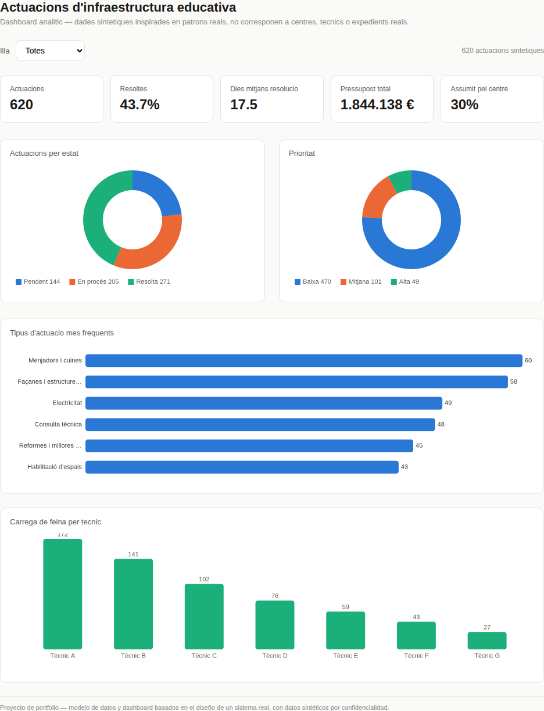

Case study — AYESA · Conselleria d'Educació i Universitats, Illes Balears
Diseño del modelo de datos y del flujo de negocio detrás de la gestión de actuaciones de infraestructura en más de 850 centros educativos de las Illes Balears.
Cada solicitud de un centro —una gotera, una avería eléctrica, la ampliación de un comedor— se tramitaba por email y hojas de cálculo sueltas. Sin trazabilidad, sin visibilidad agregada por isla o por técnico, y sin forma de responder rápido a "¿en qué punto está mi expediente?".
El sistema modela dos procesos relacionados: la gestión de incidencias del día a día, y el Plan de Infraestructuras, un ciclo anual de 5 fases con permisos distintos por perfil en cada fase.
| Fase | Quién actúa | Qué ocurre |
|---|---|---|
| 1 | Delegaciones territoriales | Crean las propuestas |
| 2 | Servicios centrales | Filtran las viables → "en estudio" |
| 3 | Equipo técnico | Visita, valida presupuesto y descriptor |
| 4 | Servicios centrales | Decide: programada / aplazada / descartada |
| 5 | Servicios centrales | Cierre del ciclo anual |
Datos sintéticos, no reales, pensados para ilustrar qué lectura habilita un modelo de datos bien estructurado: volumen por isla, tiempo medio de resolución, carga por técnico, ejecución presupuestaria.

29 tablas, esquema relacional normalizado.
Flujo de negocioIncidencias del día a día + Plan de Infraestructuras.
Control de accesoQuién puede hacer qué, y cuándo.
Los diagramas se renderizan con formato en GitHub — al abrirlos aquí verás el texto plano en Markdown.
Participé en el diseño e implementación del modelo de datos y del flujo de negocio: modelado relacional, definición de la máquina de estados, especificación de la integración con sistemas externos y traducción de los requisitos funcionales de la Conselleria a un modelo técnico sostenible.